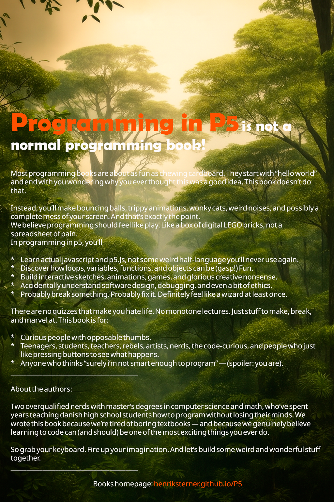

Agentic software development
Structuring specialised AI agents, tools, context and verification loops so complex software can be analysed and developed as a coordinated system.
Computer scientist · mathematician · educator
I work where computer science, mathematics and psychology meet—building intelligent software, investigating models and making difficult ideas possible to learn.
Code · models · markets · minds
ContinueProfessional profile
I am a computer scientist and mathematician with a minor in psychology from the University of Copenhagen. My work connects theoretical computer science, software development and the study of how people learn.
I move between algorithms and implementation, from computational geometry, topology and complexity to machine learning, agentic workflows and financial modelling. The common thread is a preference for ideas that can be inspected, tested and turned into useful systems.
Teaching is not separate from that work. I teach programming, informatics, mathematics, machine learning and data science, write learning materials and supervise teachers completing their pedagogy examinations in computer science.
Areas of expertise
From the theoretical limits of computation to the practical question of whether a model, a system or a lesson works outside the notebook.
Structuring specialised AI agents, tools, context and verification loops so complex software can be analysed and developed as a coordinated system.
Applied modelling, data mining, deep learning and intelligent systems—with the mathematics visible and the assumptions open to inspection.
Financial time series, stock-price prediction, portfolio analytics and market modelling. Hypotheses are tested through careful validation, backtesting and relevant benchmarks, with uncertainty, non-stationarity and overfitting treated as central problems—not footnotes.
Analytical decision support, never financial oracle.
Computational thinking, programming pedagogy and learning design informed by psychology, visualisation, experimentation and student agency.
Geometric and topological methods for understanding structure in complex data, including earlier research on alpha shapes and proteins.
Decomposing computational problems across processors and systems, including parallel approaches to factorisation and cryptography.
Algorithms, data structures, computability and complexity theory: what can be computed, how efficiently, and where the theoretical limits lie.
Programming experience
Languages are tools for thinking as much as tools for building. Long experience across object-oriented, functional, procedural and data-oriented programming makes it possible to choose the approach that fits the problem.
Selected work
A selection of systems and learning environments that represent the broader portfolio. Public repositories and smaller experiments follow below.
A Streamlit application for analysing portfolios with market data, fund look-through, returns, volatility, drawdown, beta, correlation and diversification. Screening models explore possible additions as analytical support—not investment advice.
A pedagogical AI scaffold for Python education, combining a locally fine-tuned Danish language model with differentiated feedback, learner profiles and simulated student–teacher dialogues.
A zero-installation toolkit and 38 interactive laboratories covering diagrams, code generation, algorithms, data structures, AI, simulations and step-by-step program visualisation.
A practical course in machine learning, deep learning and data science that connects models and mathematics with experimentation on real datasets.
A complete system for timetabling and task allocation in schools and educational institutions, designed around the real constraints of teams, subjects, rooms, resources and responsibilities.
Craig Reynolds’ boids extended with alignment, cohesion, separation, predators, peripheral vision and quadtree optimisation—an accessible route into objects, algorithms and emergent behaviour.
Repository & work index
Courses, applications, simulations and smaller experiments. Search by title, topic or technology, or use a field to narrow the list.
17 entries shown
Notebooks connecting Python, data science, machine learning and explanation.
A Streamlit app for proposing and voting on professional challenges.
A practical introduction to terminals, version control and collaborative GitHub workflows.
An introductory creative-coding course for Danish upper-secondary programming.
A collection of larger visual programming projects for students.
A course archive progressing from fundamentals to functions, objects and larger programs.
Boids, spatial optimisation and emergent behaviour in an interactive simulation.
Resources for game development, simulations and artificial intelligence.
A deliberately small multiple-choice Python project for beginners.
A compact implementation of the classical polyalphabetic cipher.
The companion site for the creative-coding book by Peter and Henrik Sterner.
A small file-based exercise in input, output and program structure.
Timetabling and task-allocation software for educational institutions.
An example of producing browser-based presentations from Markdown.
Portfolio analytics, market measures, screening and financial modelling.
A locally fine-tuned pedagogical AI scaffold for differentiated Python learning.
Browser tools for modelling, code generation and interactive computer-science laboratories.
No entries match that search. Try another term or field.
Research foundations
Academic work and teaching material spanning the structure of data, the limits of computation and the development of computational thinking.
Computational geometry and topology, including alpha shapes as a way to study protein structures and other complex spatial data.
Computability, complexity, parallel algorithms and distributed approaches to computational factorisation.
Computer-science didactics informed by psychology and computational thinking, including contribution to the 2017 Danish upper-secondary programming curriculum and published material on object-oriented programming through emergent flocking.
Seven selected papers, theses and teaching presentations.
Books & learning resources
Two books built around the same principle: programming is learned by combining precise concepts with things the learner can make, inspect and change.


Published
A practical introduction to programming through visual and interactive experiences. It moves from first principles to objects, software architecture and testing without postponing all the interesting parts until the end.
Explore the bookIn development
A book for Python in upper-secondary education, connecting programming, problem solving, visualisation and classroom practice. Its 38 browser-based laboratories let students predict, experiment, inspect and explain.
Explore the companion laboratoriesSelected private work · Manuscript repository not public
Contact
For conversations about computer science, AI, computational finance, software development, teaching or books, get in touch.